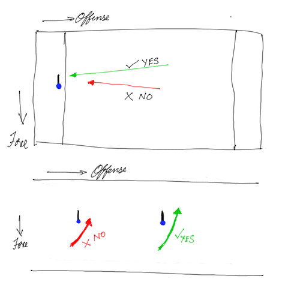

During Hyderabad HAT, I was in the cup for most part and learnt a few things about marking. My marking improved slightly during the tournament, and all it needed was changing a couple of simple things.
Distance from the handler
I was getting broken left, right and center on zone offense. I know that I don't move as quickly as I should, to prevent a dump to the handler on the break side. But, thanks to help from Vrajesh, I realized it's not all about speed. I was getting broken too easily, because I'd stand too close to the handler and stepping around me was very easy. Standing back a couple of steps, helped me. I was struggling with this initially, but Vrajesh helped me with this on the side lines, asking me to step back a little, each time he saw me stepping too close, and soon I was able to judge the distance myself and adjust. Stepping back made it harder for the handler to step around me and dump, leading to far fewer breaks.
Running to your (wo)man (handler)
If it's a pull, and you are running down from the other end-zone, it helps if you run down on the break side, instead of running straight up. Position yourself a little on the breakside, so that you don't give away easy break side throws. If you are in a cup (or even otherwise), when you run to your (wo)man (from the force side), don't slow down as soon you reach within the marking range (3 yards) of your (wo)man. Start slowing down, only once you cross your man and get to the break side a little and try to stop as quickly as possible. That way you are disallowing any easy breakside throws, just by getting in the way of the throw, even if you are in no position to "really mark". Then move in, and position yourself at the appropriate distance, angle and what not... Look at the image below to see, what I mean.
